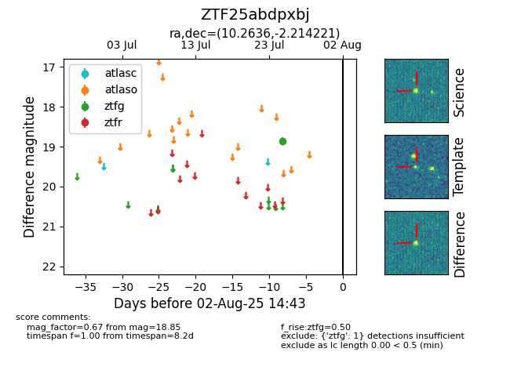

Target ZTF25abdpxbj at 2025-08-02 14:43, see:
FINK: fink-portal.org/ZTF25abdpxbj
Lasair: lasair-ztf.lsst.ac.uk/objects/ZTF25abdpxbj
ALeRCE: alerce.online/object/ZTF25abdpxbj
alt names
ZTF25abdpxbj (ztf,fink)
coordinates:
equatorial (ra, dec) = (10.2636,-2.21422)
galactic (l, b) = (116.7932,-64.96213)
photometry
last ztfg=18.85
1 ztfg detections
